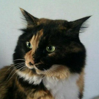

VimConf 2023 Tiny
2023-11-18 13:00 to 19:30
VimConf is an international conference about Vim, the editor.
What's VimConf 2023 Tiny
VimConf is the world's first and only one conference about Vim regularly held by a community.
- Date: Novembr 18th, 2023 (Sat)
- Time: 13:00 ~ 17:30 (Convivial party 17:30 ~ 19:30)
- Place: Akiba Plaza, Seminar room 1, at Akihabara Tokyo, Japan
- Ticket sales start date: Mid-September 2023
Speakers
We have other speakers besides the keynote speakers.
See sessions
Misc
All slides are in English. Talks will be given in either English or Japanese.
(This year we aren't able to provide bidirectional realtime translations)
We're looking forward to seeing you!
開催概要 (What's VimConf 2023 Tiny in Japanese)
VimConf は、世界初かつ世界で唯一のコミュニティによって定期運営されているVimの国際カンファレンスです。
スピーカーについて
- スピーカー（近日公開）
その他
発表スライドはすべて英語です。発表は英語か日本語かいずれかの言語で行われます。
(今年は、発表に関しては英語⇒日本語、日本語⇒英語の双方向の翻訳はありません。)
皆様のご参加をお待ちしております。
CFP Closed -- Looking for VimConf 2023 speakers
We’re looking for speakers for VimConf 2023 on 2023-11-03!
VimConf this year’s main theme is “how to be more productive with Vim?” ― We’re collecting talks which help Vim users to “use Vim more productively,” especially those who would like to boost their productivities with Vim or who wonder how other Vimmers use Vim usages.
This, however, doesn’t mean we’re not collecting talks about Vim internals or creating Vim plugins. We’re looking forward to see one-and-only talks backed by deep experiences.
When reviewing VimConf 2017 and 2018, there were wonderful talks about creating useful Vim plugins and improving Vim itself.
We, the VimConf staff, discussed what VimConf 2023 should be like and we found we’d like to be closer to Vim users using Vim and being interested in diving deeper into Vim.
We had more discussion and finally decided this year’s main theme: “how to be more productive with Vim?”
We’re thrilled about what we’ll see in VimConf 2023.
VimConf is based on the speakers. Without CFP submissions, we cannot hold VimConf.
What you need to have when submitting a CFP is not a technical supremacy, but passion for Vim.
How about giving a talk in VimConf to tell other Vim users about your own Vim?
Details
Here are the details of VimConf 2023 talk submission.
- Form URL: https://forms.gle/4SJ4dU5LXhp8Eus38
- Deadline: 2023-08-05 23:59 (JST)
- Number of submissions: Unlimited
- Presentation time: Choose from 15 mins, 20 mins or 30 mins
- we might ask you to talk more or less in order to fit within the schedule
- time for Q&A is included, but it’s up to you to have it or not
- Slides' language: English
- Spoken language: Choose English or Japanese
- VimConf staff can help you with English if you are not a native English speaker
- For screening,
- please pack any information the staff need to know about your proposal – It helps them
- The cleaner the better, but again, not submitting is probably worse than submitting a immature one.
- We have a screening meeting. FYI we had a six+ hour meeting last year, and we’re looking forward to seeing many proposals this year too
- Would be helpful for you if you refer to past presentations via the links below
- It’s not fix yet, but we’re considering to assist transportation expenses
We’re looking forward to seeing your submissions!
-- VimConf Preparatory Committee --
CFP for Lightning Talks
Besides them, we’ll have some 5 minutes lightening talks (LTs) for each session. It requires a VimConf ticket to submit a proposal for that, which is different to this CFP for the (main) speakers.
Form URL: https://docs.google.com/forms/d/1CY8Nx13PNXCmQ-3w88lt2GHfkFF1KYkwbURygPGjwb0/edit
Details in japanese: vim-jp » VimConf 2023 のライトニングトークの募集を開始します
Staff
aomoriringo


Tatsuhiro Ujihisa


Taro Muraoka
also known as KaoriYa


thinca

mopp

Yasuhiro Matsumoto
also known as mattn